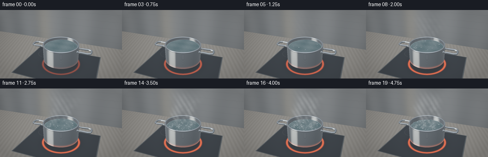
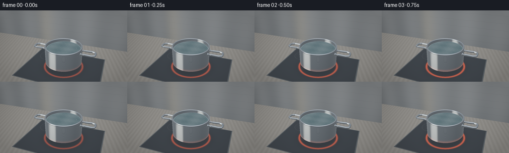
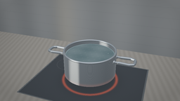
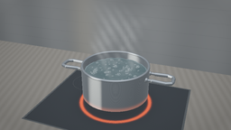
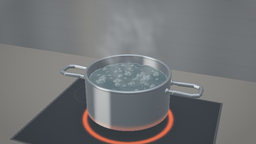

CODING AGENTS AS PIXEL WORLD MODELS
traex/GPT-6.1-Sol · phygen_106
点击播放 · 原生 RGB 像素
逐轮保存的候选
回放视频、检查图与代码变化。
每份候选均可单独播放。实际图片检查记录在下方工具轨迹中。
候选 01播放与检查图
点击播放 · 原生 RGB 像素


展开代码变化
--- 上一保存版本
+++ 本次保存版本
@@ -0,0 +1,282 @@
+import numpy as np
+from PIL import Image
+from pathlib import Path
+import artifact_io
+
+# Procedural, supersampled ray rendering: stainless-steel saucepan on a ceramic hob.
+W,H,S = 256,144,3
+w,h=W*S,H*S
+rng=np.random.default_rng(24)
+Y,X=np.mgrid[:h,:w]
+cam=np.array([2.5,-6.8,4.9],np.float32)
+target=np.array([0.,0.,1.35],np.float32)
+f=(target-cam); f/=np.linalg.norm(f)
+r=np.cross(f,[0,0,1]); r/=np.linalg.norm(r)
+u=np.cross(r,f)
+xx=(X+.5-w/2)/w*2; yy=(h/2-Y-.5)/w*2
+D=f+xx[...,None]*r*.46+yy[...,None]*u*.46
+D/=np.linalg.norm(D,axis=-1)[...,None]
+O=np.broadcast_to(cam,D.shape)
+L=np.array([-3.,-4.,7.]); L/=np.linalg.norm(L)
+
+def norm(a): return a/(np.linalg.norm(a,axis=-1)[...,None]+1e-8)
+def env(v):
+ z=v[...,2]
+ c=np.zeros(v.shape,np.float32)+np.array([.10,.12,.14])
+ c+=np.maximum(z,0)[...,None]*np.array([.20,.23,.27])
+ # A tall window and broad softbox are reflected in the brushed steel.
+ window=np.exp(-((v[...,0]+.63)/.24)**6-((v[...,1]+.46)/.37)**6)
+ c+=window[...,None]*np.array([.85,.85,.80])
+ soft=np.exp(-((v[...,0]-.15)/.65)**2-((v[...,1]+.22)/.5)**2-((z-.9)/.5)**2)
+ c+=soft[...,None]*np.array([.5,.52,.54])
+ lower=np.clip(-z,0,1)
+ c=c*(1-lower[...,None]*.65)
+ return c
+
+def newscene():
+ return np.full((h,w),1e5,np.float32),np.zeros((h,w,3),np.float32),np.zeros((h,w),np.int8)
+def put(t,n,m):
+ global depth,N,mat
+ mask=(t>.001)&(t<depth)
+ depth[mask]=t[mask]; N[mask]=n[mask]; mat[mask]=m
+
+def cylinder(radius,zlo,zhi,m,inward=False):
+ a=D[...,0]**2+D[...,1]**2
+ b=2*(cam[0]*D[...,0]+cam[1]*D[...,1]); c=cam[0]**2+cam[1]**2-radius**2
+ disc=b*b-4*a*c
+ for sign in [-1,1]:
+ t=(-b+sign*np.sqrt(np.maximum(disc,0)))/(2*a)
+ p=O+D*t[...,None]
+ valid=(disc>=0)&(p[...,2]>=zlo)&(p[...,2]<=zhi)
+ n=np.stack([p[...,0]/radius,p[...,1]/radius,np.zeros((h,w))],-1)
+ if inward:n=-n
+ put(np.where(valid,t,1e6),n,m)
+
+def disk(rad,z,m):
+ t=(z-cam[2])/D[...,2]; p=O+D*t[...,None]
+ n=np.zeros_like(D); n[...,2]=1
+ put(np.where(p[...,0]**2+p[...,1]**2<rad*rad,t,1e6),n,m)
+
+def sphere(center,rad,m):
+ q=cam-np.array(center)
+ b=np.sum(D*q,axis=-1); c=np.sum(q*q)-rad*rad
+ dd=b*b-c;t=-b-np.sqrt(np.maximum(dd,0))
+ p=O+D*t[...,None]; n=(p-center)/rad
+ put(np.where(dd>=0,t,1e6),n,m)
+
+def segment(a,b,rad,m):
+ a=np.array(a); b=np.array(b); axis=(b-a); length=np.linalg.norm(axis); axis/=length
+ q=cam-a; dv=np.sum(D*axis,axis=-1); qv=np.sum(q*axis)
+ dp=D-dv[...,None]*axis; qp=q-qv*axis
+ aa=np.sum(dp*dp,axis=-1); bb=2*np.sum(dp*qp,axis=-1); cc=np.sum(qp*qp)-rad*rad
+ disc=bb*bb-4*aa*cc; t=(-bb-np.sqrt(np.maximum(disc,0)))/(2*aa+1e-9)
+ p=O+D*t[...,None]; along=np.sum((p-a)*axis,axis=-1)
+ normal=norm(p-a-along[...,None]*axis)
+ put(np.where((disc>=0)&(along>=0)&(along<=length),t,1e6),normal,m)
+ sphere(a,rad,m)
+
+def torus(R,rr,z,m):
+ # Sphere tracing restricted to a torus bounding box.
+ t=np.zeros((h,w),np.float32)
+ lo=np.full((h,w),-1e6);hi=np.full((h,w),1e6)
+ for k,(a,b) in enumerate([(-R-rr,R+rr),(-R-rr,R+rr),(z-rr,z+rr)]):
+ t1=(a-cam[k])/D[...,k];t2=(b-cam[k])/D[...,k]
+ lo=np.maximum(lo,np.minimum(t1,t2));hi=np.minimum(hi,np.maximum(t1,t2))
+ valid=(hi>=lo)&(hi>0);t=np.maximum(lo,0).astype(np.float32)
+ iy,ix=np.where(valid); tv=t[iy,ix]; dv=D[iy,ix]
+ hit=np.zeros(len(tv),bool)
+ for _ in range(40):
+ p=cam+dv*tv[:,None]; rho=np.sqrt(p[:,0]**2+p[:,1]**2)
+ sd=np.sqrt((rho-R)**2+(p[:,2]-z)**2)-rr
+ hit|=abs(sd)<.00025
+ tv+=np.where(hit,0,np.maximum(sd,.00005))
+ p=cam+dv*tv[:,None];rho=np.sqrt(p[:,0]**2+p[:,1]**2)
+ nn=norm(np.stack([p[:,0]*(rho-R)/rho,p[:,1]*(rho-R)/rho,p[:,2]-z],-1))
+ nt=np.zeros_like(D);nt[iy,ix]=nn;t[:]=1e6;t[iy[hit],ix[hit]]=tv[hit]
+ put(t,nt,m)
+
+# Scene geometry, rendered only once.
+depth,N,mat=newscene()
+# countertop and backsplash
+floor_t=-cam[2]/D[...,2]; nf=np.zeros_like(D);nf[...,2]=1
+put(floor_t,nf,1)
+wall_t=(3.3-cam[1])/D[...,1];nw=np.zeros_like(D);nw[...,1]=-1
+put(wall_t,nw,2)
+# saucepan shell, rolled lip, base, and handles
+cylinder(1.1,.32,1.35,3)
+cylinder(1.035,.39,1.35,3,True)
+disk(1.08,.325,3)
+disk(1.035,.405,4)
+torus(1.0675,.040,1.35,3)
+torus(1.05,.048,.355,3)
+for side in [-1,1]:
+ for yy0 in [-.235,.235]:
+ segment((side*1.065,yy0,1.13),(side*1.35,yy0,1.13),.044,3)
+ sphere((side*1.075,yy0,1.13),.075,3)
+ # Rectangular rounded steel loop handle.
+ pts=[(1.26,-.23),(1.67,-.26),(1.83,-.19),(1.86,-.10),(1.86,.10),(1.83,.19),(1.67,.26),(1.26,.23)]
+ for a,b in zip(pts,pts[1:]):
+ segment((side*a[0],a[1],1.13),(side*b[0],b[1],1.13),.057,3)
+static_depth=depth.copy();static_N=N.copy();static_mat=mat.copy()
+P=O+D*depth[...,None]
+base_noise=rng.normal(0,.0022,(h,w))
+
+def shade_static(heat):
+ c=env(D)*.32
+ floor=mat==1
+ x,y=P[...,0],P[...,1]
+ tile=np.array([.30,.29,.27])+base_noise[...,None]
+ tile=np.broadcast_to(tile,D.shape).copy()
+ tile+=.018*np.sin(x[...,None]*23+y[...,None]*7)
+ panel=(abs(x)<2.38)&(y>-1.95)&(y<1.6)
+ tile[panel]=np.array([.031,.038,.046])+base_noise[panel,None]*.3
+ # bevel of black glass panel
+ edge=panel&((abs(x)>2.32)|(y<-1.90)|(y>1.55))
+ tile[edge]=[.095,.11,.12]
+ rad=np.sqrt(x*x+y*y)
+ shadow=np.exp(-(rad/1.28)**4)
+ tile*=1-shadow[...,None]*.52
+ refl=norm(D-2*np.sum(D*N,-1)[...,None]*N)
+ tile+=env(refl)*.10*panel[...,None]
+ # circular ceramic heating zone, visible around bottom of saucepan
+ ring=(rad>1.115)&(rad<1.23)&panel
+ glow=np.exp(-((rad-1.17)/.053)**2)*heat
+ tile+=glow[...,None]*np.array([1.03,.135,.027])
+ coil=(np.sin(rad*210)>-.35)&ring
+ tile[coil]+=np.array([.32,.05,.014])*heat
+ # distant second, unlit ring engraved in the glass
+ r2=np.sqrt((x+1.42)**2+(y-.81)**2)
+ tile+=np.exp(-((r2-.59)/.007)**2)[...,None]*np.array([.045,.045,.047])
+ c[floor]=tile[floor]
+ wall=mat==2
+ wc=np.zeros_like(D)+np.array([.19,.205,.215])
+ wc+=(.017*np.sin(P[...,0]*2.5)+.022*P[...,2])[...,None]
+ seams=np.exp(-((np.mod(P[...,2]+.06,.53)-.025)/.007)**2)
+ wc-=seams[...,None]*.025
+ # softly blurred kitchen features
+ wc+=np.exp(-((P[...,0]+2.8)/.7)**2)[...,None]*np.array([.075,.06,.035])
+ c[wall]=wc[wall]
+ metal=(mat==3)|(mat==4)
+ ndv=np.clip(-np.sum(D*N,-1),0,1)
+ reflected=D-2*np.sum(D*N,-1)[...,None]*N
+ e=env(reflected)
+ diffuse=np.clip(np.sum(N*L,axis=-1),0,1)
+ steel=e*.70+np.array([.15,.17,.185])*(.38+.50*diffuse[...,None])
+ # Fine horizontal machining lines, stable in world space.
+ brush=(np.sin(P[...,2]*1250)+.4*np.sin(P[...,2]*2400))* .006
+ steel+=brush[...,None]
+ steel+=np.exp(-((P[...,2]-.36)/.07)**2)[...,None]*np.array([.27,.055,.012])*heat
+ steel+=(1-ndv)[...,None]**5*.10
+ c[metal]=steel[metal]
+ return np.clip(c,0,1)
+
+# Persistent nucleation sites. Each bubble grows, lifts, and bursts at the surface.
+bxy=[]
+for _ in range(118):
+ ang=rng.uniform(0,np.pi*2);rr=np.sqrt(rng.uniform(0,.88**2))
+ bxy.append((rr*np.cos(ang),rr*np.sin(ang),rng.uniform(.020,.069),rng.uniform(0,1),rng.uniform(.7,1.45)))
+bxy=np.array(bxy)
+
+
+def water(t,level,power):
+ global depth,N,mat
+ tw=(level-cam[2])/D[...,2]
+ for _ in range(5):
+ p=O+D*tw[...,None];x=p[...,0];y=p[...,1]
+ amp=.002+power*.020
+ z=level+amp*(np.sin(x*15+y*7+t*11)*.42+np.sin(x*9-y*19-t*14)*.30+np.sin(x*26+y*24+t*18)*.22)
+ tw=(z-cam[2])/D[...,2]
+ p=O+D*tw[...,None];x=p[...,0];y=p[...,1]
+ gx=amp*(15*.42*np.cos(x*15+y*7+t*11)+9*.30*np.cos(x*9-y*19-t*14)+26*.22*np.cos(x*26+y*24+t*18))
+ gy=amp*(7*.42*np.cos(x*15+y*7+t*11)-19*.30*np.cos(x*9-y*19-t*14)+24*.22*np.cos(x*26+y*24+t*18))
+ n=norm(np.stack([-gx,-gy,np.ones((h,w))],-1))
+ valid=x*x+y*y<1.034**2
+ put(np.where(valid,tw,1e6),n,5)
+ # Small convex transparent vapor domes at the water surface.
+ for j,(bx,by,r0,ph,speed) in enumerate(bxy):
+ activation=j/len(bxy)
+ if activation>power: continue
+ phase=(t*speed*1.7+ph)%1
+ if phase>.87:continue
+ radius=r0*(.35+.65*np.sin(phase*np.pi/.95))*(.70+power*.30)
+ dx=.017*np.sin(t*6+ph*18);dy=.019*np.cos(t*7+ph*21)
+ sphere((bx+dx,by+dy,level-radius*.28),radius,6)
+
+
+def shade_water(c,t,power,level):
+ p=O+D*depth[...,None]
+ ndv=np.clip(-np.sum(D*N,-1),0,1)
+ reflection=D-2*np.sum(D*N,-1)[...,None]*N
+ fres=.025+.975*(1-ndv)**5
+ # Refracted steel bottom and moving sunlight caustics.
+ bottom=np.zeros_like(D)+np.array([.14,.205,.225])
+ bottom+=(.018*np.sin(p[...,0]*6)+.012*np.cos(p[...,1]*9))[...,None]
+ caustic=(np.sin(p[...,0]*24+p[...,1]*16+t*2.4)+np.sin(p[...,0]*16-p[...,1]*23-t*2))
+ bottom+=np.maximum(caustic-1.2,0)[...,None]*.023
+ wc=bottom*(1-fres[...,None])+env(reflection)*fres[...,None]
+ # extended window reflection, kept mostly white rather than blue
+ spec=np.maximum(np.sum(reflection*L,axis=-1),0)**52
+ wc+=spec[...,None]*np.array([.65,.69,.68])
+ # rim of the pot is reflected on the perimeter of the water
+ radius=np.sqrt(p[...,0]**2+p[...,1]**2)
+ wc+=np.exp(-((radius-1.015)/.015)**2)[...,None]*np.array([.12,.15,.16])
+ mask=mat==5;c[mask]=wc[mask]
+ # Bubbles have a thin bright rim, a dark transparent center and a tiny highlight.
+ rim=(1-ndv)**2.5
+ bc=np.array([.16,.22,.24])*(1-rim[...,None]) + np.array([.68,.74,.75])*rim[...,None]
+ bc+=env(reflection)*(.1+.35*fres[...,None])
+ bc+=np.maximum(np.sum(reflection*L,axis=-1),0)[...,None]**70*.90
+ mask=mat==6;c[mask]=bc[mask]
+ return c
+
+
+def steam(c,t,power,level):
+ if power<.04:return c
+ # Ray-integrated, advected wisps above the hot surface. Multiple narrow
+ # buoyant columns merge into a softly dispersed plume higher up.
+ total=np.zeros((h,w),np.float32)
+ near=3.8;far=9.3;steps=42;ds=(far-near)/steps
+ for j in range(steps):
+ distance=near+(j+.5)*ds
+ p=cam+D*distance;x,y,z=p[...,0],p[...,1],p[...,2];zz=z-level
+ window=(zz>0)&(zz<2.25)&(distance<depth)
+ rise=np.maximum(zz,0)
+ den=np.zeros((h,w),np.float32)
+ for k,(sx,sy) in enumerate([(-.56,.08),(.09,.22),(.48,-.16),(-.14,-.45)]):
+ cx=sx+.14*np.sin(rise*4.0-t*1.25+k*2)+rise*.10
+ cy=sy+.10*np.sin(rise*5-t*1.5+k*3)
+ spread=.095+rise*.15
+ den+=np.exp(-((x-cx)**2+(y-cy)**2)/(spread**2))* (.55+.45*np.sin(rise*8-t*3+k)**2)
+ # Animated multiscale turbulence breaks the columns into fine filaments.
+ noise=(np.sin(x*19+y*12+z*13-t*4)+np.sin(x*31-y*19+z*10+t*3)+np.sin(x*10+y*27-z*21+t*2))/3
+ filaments=np.clip(.52+noise*.9,0,1)
+ fade=np.clip(rise/.16,0,1)*np.exp(-rise*.80)*np.clip((2.25-rise)/.55,0,1)
+ total+=den*filaments*fade*window*ds*power*1.10
+ alpha=1-np.exp(-total)
+ steamcolor=np.array([.77,.80,.81])
+ return c*(1-alpha[...,None])+steamcolor*alpha[...,None]
+
+frames=[]
+for i in range(20):
+ t=i/4
+ q=i/19
+ power=np.clip((q-.16)/.64,0,1)**1.45
+ heat=.28+.70*min(1,q*2.3)
+ level=1.19-.105*q**2
+ depth=static_depth.copy();N=static_N.copy();mat=static_mat.copy()
+ # static illumination is reused, with only burner intensity changed
+ c=shade_static(heat)
+ water(t,level,power)
+ c=shade_water(c,t,power,level)
+ c=steam(c,t,power,level)
+ # restrained filmic toning; a little edge falloff and sensor grain
+ c=np.maximum(c,0)
+ c=c/(.90+c*.24)
+ c=np.clip(c,0,1)**(1/2.1)
+ vig=1-.12*((xx/.95)**2+(yy/.64)**2)
+ c*=np.clip(vig,.82,1)[...,None]
+ frame=Image.fromarray(np.uint8(np.clip(c*255,0,255))).resize((W,H),Image.Resampling.LANCZOS)
+ frames.append(np.asarray(frame))
+ frame.save('.tmp/frame_%02d.png'%i)
+ print('frame',i,flush=True)
+artifact_io.save(np.stack(frames),Path(__file__).resolve().parent)
候选 02播放与检查图
点击播放 · 原生 RGB 像素

展开代码变化
--- 上一保存版本
+++ 本次保存版本
@@ -14,7 +14,7 @@
r=np.cross(f,[0,0,1]); r/=np.linalg.norm(r)
u=np.cross(r,f)
xx=(X+.5-w/2)/w*2; yy=(h/2-Y-.5)/w*2
-D=f+xx[...,None]*r*.46+yy[...,None]*u*.46
+D=f+xx[...,None]*r*.405+yy[...,None]*u*.405
D/=np.linalg.norm(D,axis=-1)[...,None]
O=np.broadcast_to(cam,D.shape)
L=np.array([-3.,-4.,7.]); L/=np.linalg.norm(L)
@@ -127,7 +127,7 @@
x,y=P[...,0],P[...,1]
tile=np.array([.30,.29,.27])+base_noise[...,None]
tile=np.broadcast_to(tile,D.shape).copy()
- tile+=.018*np.sin(x[...,None]*23+y[...,None]*7)
+ tile+=.004*np.sin(x[...,None]*43+y[...,None]*63)
panel=(abs(x)<2.38)&(y>-1.95)&(y<1.6)
tile[panel]=np.array([.031,.038,.046])+base_noise[panel,None]*.3
# bevel of black glass panel
@@ -174,7 +174,7 @@
bxy=[]
for _ in range(118):
ang=rng.uniform(0,np.pi*2);rr=np.sqrt(rng.uniform(0,.88**2))
- bxy.append((rr*np.cos(ang),rr*np.sin(ang),rng.uniform(.020,.069),rng.uniform(0,1),rng.uniform(.7,1.45)))
+ bxy.append((rr*np.cos(ang),rr*np.sin(ang),rng.uniform(.024,.091),rng.uniform(0,1),rng.uniform(.7,1.45)))
bxy=np.array(bxy)
@@ -183,7 +183,7 @@
tw=(level-cam[2])/D[...,2]
for _ in range(5):
p=O+D*tw[...,None];x=p[...,0];y=p[...,1]
- amp=.002+power*.020
+ amp=.002+power*.029
z=level+amp*(np.sin(x*15+y*7+t*11)*.42+np.sin(x*9-y*19-t*14)*.30+np.sin(x*26+y*24+t*18)*.22)
tw=(z-cam[2])/D[...,2]
p=O+D*tw[...,None];x=p[...,0];y=p[...,1]
@@ -235,7 +235,7 @@
# Ray-integrated, advected wisps above the hot surface. Multiple narrow
# buoyant columns merge into a softly dispersed plume higher up.
total=np.zeros((h,w),np.float32)
- near=3.8;far=9.3;steps=42;ds=(far-near)/steps
+ near=3.8;far=9.3;steps=85;ds=(far-near)/steps
for j in range(steps):
distance=near+(j+.5)*ds
p=cam+D*distance;x,y,z=p[...,0],p[...,1],p[...,2];zz=z-level
@@ -248,10 +248,13 @@
spread=.095+rise*.15
den+=np.exp(-((x-cx)**2+(y-cy)**2)/(spread**2))* (.55+.45*np.sin(rise*8-t*3+k)**2)
# Animated multiscale turbulence breaks the columns into fine filaments.
- noise=(np.sin(x*19+y*12+z*13-t*4)+np.sin(x*31-y*19+z*10+t*3)+np.sin(x*10+y*27-z*21+t*2))/3
- filaments=np.clip(.52+noise*.9,0,1)
+ wx=x+.12*np.sin(y*8+z*7-t*2)
+ wy=y+.14*np.sin(x*7-z*6+t*1.3)
+ wz=z+.15*np.sin(x*11+y*9-t*2.1)
+ noise=(np.sin(wx*12+wy*5+wz*7-t*2.1)+np.sin(wx*7-wy*11+wz*4+t*1.7)+np.sin(wx*5+wy*9-wz*13+t*1.4))/3
+ filaments=np.clip(.58+noise*.60,0,1)
fade=np.clip(rise/.16,0,1)*np.exp(-rise*.80)*np.clip((2.25-rise)/.55,0,1)
- total+=den*filaments*fade*window*ds*power*1.10
+ total+=den*filaments*fade*window*ds*power*1.25
alpha=1-np.exp(-total)
steamcolor=np.array([.77,.80,.81])
return c*(1-alpha[...,None])+steamcolor*alpha[...,None]
候选 03播放与检查图
可观测工具轨迹
实际执行的命令与返回图片。
命令 1exit 0
/bin/bash -lc 'ls -la && cat prompt.txt && cat GENERATION_RULES.md && cat task_spec.json'
命令 2exit 0
/bin/bash -lc 'cat artifact_io.py'
命令 3exit 1
/bin/bash -lc "mkdir -p .tmp && cat > generate.py <<'PY'
import numpy as np
from PIL import Image
from pathlib import Path
import artifact_io
# Procedural, supersampled ray rendering: stainless-steel saucepan on a ceramic hob.
W,H,S = 256,144,3
w,h=W*S,H*S
rng=np.random.default_rng(24)
Y,X=np.mgrid[:h,:w]
cam=np.array([2.5,-6.8,4.9],np.float32)
target=np.array([0.,0.,1.35],np.float32)
f=(target-cam); f/=np.linalg.norm(f)
r=np.cross(f,[0,0,1]); r/=np.linalg.norm(r)
u=np.cross(r,f)
xx=(X+.5-w/2)/w*2; yy=(h/2-Y-.5)/w*2
D=f+xx[...,None]*r*.46+yy[...,None]*u*.46
D/=np.linalg.norm(D,axis=-1)[...,None]
O=np.broadcast_to(cam,D.shape)
L=np.array([-3.,-4.,7.]); L/=np.linalg.norm(L)
def norm(a): return a/(np.linalg.norm(a,axis=-1)[...,None]+1e-8)
def env(v):
z=v[...,2]
c=np.zeros(v.shape,np.float32)+np.array([.10,.12,.14])
c+=np.maximum(z,0)[...,None]*np.array([.20,.23,.27])
# A tall window and broad softbox are reflected in the brushed steel.
window=np.exp(-((v[...,0]+.63)/.24)**6-((v[...,1]+.46)/.37)**6)
c+=window[...,None]*np.array([.85,.85,.80])
soft=np.exp(-((v[...,0]-.15)/.65)**2-((v[...,1]+.22)/.5)**2-((z-.9)/.5)**2)
c+=soft[...,None]*np.array([.5,.52,.54])
lower=np.clip(-z,0,1)
c=c*(1-lower[...,None]*.65)
return c
def newscene():
return np.full((h,w),1e5,np.float32),np.zeros((h,w,3),np.float32),np.zeros((h,w),np.int8)
def put(t,n,m):
global depth,N,mat
mask=(t>.001)&(t<depth)
depth[mask]=t[mask]; N[mask]=n[mask]; mat[mask]=m
def cylinder(radius,zlo,zhi,m,inward=False):
a=D[...,0]**2+D[...,1]**2
b=2*(cam[0]*D[...,0]+cam[1]*D[...,1]); c=cam[0]**2+cam[1]**2-radius**2
disc=b*b-4*a*c
for sign in [-1,1]:
t=(-b+sign*np.sqrt(np.maximum(disc,0)))/(2*a)
p=O+D*t[...,None]
valid=(disc>=0)&(p[...,2]>=zlo)&(p[...,2]<=zhi)
n=np.stack([p[...,0]/radius,p[...,1]/radius,np.zeros((h,w))],-1)
if inward:n=-n
put(np.where(valid,t,1e6),n,m)
def disk(rad,z,m):
t=(z-cam[2])/D[...,2]; p=O+D*t[...,None]
n=np.zeros_like(D); n[...,2]=1
put(np.where(p[...,0]**2+p[...,1]**2<rad*rad,t,1e6),n,m)
def sphere(center,rad,m):
q=cam-np.array(center)
b=np.sum(D*q,axis=-1); c=np.sum(q*q)-rad*rad
dd=b*b-c;t=-b-np.sqrt(np.maximum(dd,0))
p=O+D*t[...,None]; n=(p-center)/rad
put(np.where(dd>=0,t,1e6),n,m)
def segment(a,b,rad,m):
a=np.array(a); b=np.array(b); axis=(b-a); length=np.linalg.norm(axis); axis/=length
q=cam-a; dv=np.sum(D*axis,axis=-1); qv=np.sum(q*axis)
dp=D-dv[...,None]*axis; qp=q-qv*axis
aa=np.sum(dp*dp,axis=-1); bb=2*np.sum(dp*qp,axis=-1); cc=np.sum(qp*qp)-rad*rad
disc=bb*bb-4*aa*cc; t=(-bb-np.sqrt(np.maximum(disc,0)))/(2*aa+1e-9)
p=O+D*t[...,None]; along=np.sum((p-a)*axis,axis=-1)
normal=norm(p-a-along[...,None]*axis)
put(np.where((disc>=0)&(along>=0)&(along<=length),t,1e6),normal,m)
sphere(a,rad,m)
def torus(R,rr,z,m):
# Sphere tracing restricted to a torus bounding box.
t=np.zeros((h,w),np.float32)
lo=np.full((h,w),-1e6);hi=np.full((h,w),1e6)
for k,(a,b) in enumerate([(-R-rr,R+rr),(-R-rr,R+rr),(z-rr,z+rr)]):
t1=(a-cam[k])/D[...,k];t2=(b-cam[k])/D[...,k]
lo=np.maximum(lo,np.minimum(t1,t2));hi=np.minimum(hi,np.maximum(t1,t2))
valid=(hi>=lo)&(hi>0);t=np.maximum(lo,0).astype(np.float32)
iy,ix=np.where(valid); tv=t[iy,ix]; dv=D[iy,ix]
hit=np.zeros(len(tv),bool)
for _ in range(40):
p=cam+dv*tv[:,None]; rho=np.sqrt(p[:,0]**2+p[:,1]**2)
sd=np.sqrt((rho-R)**2+(p[:,2]-z)**2)-rr
hit|=abs(sd)<.00025
tv+=np.where(hit,0,np.maximum(sd,.00005))
p=cam+dv*tv[:,None];rho=np.sqrt(p[:,0]**2+p[:,1]**2)
nn=norm(np.stack([p[:,0]*(rho-R)/rho,p[:,1]*(rho-R)/rho,p[:,2]-z],-1))
nt=np.zeros_like(D);nt[iy,ix]=nn;t[:]=1e6;t[iy[hit],ix[hit]]=tv[hit]
put(t,nt,m)
# Scene geometry, rendered only once.
depth,N,mat=newscene()
# countertop and backsplash
floor_t=-cam[2]/D[...,2]; nf=np.zeros_like(D);nf[...,2]=1
put(floor_t,nf,1)
wall_t=(3.3-cam[1])/D[...,1];nw=np.zeros_like(D);nw[...,1]=-1
put(wall_t,nw,2)
# saucepan shell, rolled lip, base, and handles
cylinder(1.1,.32,1.35,3)
cylinder(1.035,.39,1.35,3,True)
disk(1.08,.325,3)
disk(1.035,.405,4)
torus(1.0675,.040,1.35,3)
torus(1.05,.048,.355,3)
for side in [-1,1]:
for yy0 in [-.235,.235]:
segment((side*1.065,yy0,1.13),(side*1.35,yy0,1.13),.044,3)
sphere((side*1.075,yy0,1.13),.075,3)
# Rectangular rounded steel loop handle.
pts=[(1.26,-.23),(1.67,-.26),(1.83,-.19),(1.86,-.10),(1.86,.10),(1.83,.19),(1.67,.26),(1.26,.23)]
for a,b in zip(pts,pts[1:]):
segment((side*a[0],a[1],1.13),(side*b[0],b[1],1.13),.057,3)
static_depth=depth.copy();static_N=N.copy();static_mat=mat.copy()
P=O+D*depth[...,None]
base_noise=rng.normal(0,.0022,(h,w))
def shade_static(heat):
c=env(D)*.32
floor=mat==1
x,y=P[...,0],P[...,1]
tile=np.array([.30,.29,.27])+base_noise[...,None]
tile=np.broadcast_to(tile,D.shape).copy()
tile+=.018*np.sin(x[...,None]*23+y[...,None]*7)
panel=(abs(x)<2.38)&(y>-1.95)&(y<1.6)
tile[panel]=np.array([.031,.038,.046])+base_noise[panel,None]*.3
# bevel of black glass panel
edge=panel&((abs(x)>2.32)|(y<-1.90)|(y>1.55))
tile[edge]=[.095,.11,.12]
rad=np.sqrt(x*x+y*y)
shadow=np.exp(-(rad/1.28)**4)
tile*=1-shadow[...,None]*.52
refl=norm(D-2*np.sum(D*N,-1)[...,None]*N)
tile+=env(refl)*.10*panel[...,None]
# circular ceramic heating zone, visible around bottom of saucepan
ring=(rad>1.115)&(rad<1.23)&panel
glow=np.exp(-((rad-1.17)/.053)**2)*heat
tile+=glow[...,None]*np.array([1.03,.135,.027])
coil=(np.sin(rad*210)>-.35)&ring
tile[coil]+=np.array([.32,.05,.014])*heat
# distant second, unlit ring engraved in the glass
r2=np.sqrt((x+1.42)**2+(y-.81)**2)
tile+=np.exp(-((r2-.59)/.007)**2)[...,None]*np.array([.045,.045,.047])
c[floor]=tile[floor]
wall=mat==2
wc=np.zeros_like(D)+np.array([.19,.205,.215])
wc+=(.017*np.sin(P[...,0]*2.5)+.022*P[...,2])[...,None]
seams=np.exp(-((np.mod(P[...,2]+.06,.53)-.025)/.007)**2)
wc-=seams[...,None]*.025
# softly blurred kitchen features
wc+=np.exp(-((P[...,0]+2.8)/.7)**2)[...,None]*np.array([.075,.06,.035])
c[wall]=wc[wall]
metal=(mat==3)|(mat==4)
ndv=np.clip(-np.sum(D*N,-1),0,1)
reflected=D-2*np.sum(D*N,-1)[...,None]*N
e=env(reflected)
diffuse=np.clip(np.sum(N*L,axis=-1),0,1)
steel=e*.70+np.array([.15,.17,.185])*(.38+.50*diffuse[...,None])
# Fine horizontal machining lines, stable in world space.
brush=(np.sin(P[...,2]*1250)+.4*np.sin(P[...,2]*2400))* .006
steel+=brush[...,None]
steel+=np.exp(-((P[...,2]-.36)/.07)**2)[...,None]*np.array([.27,.055,.012])*heat
steel+=(1-ndv)[...,None]**5*.10
c[metal]=steel[metal]
return np.clip(c,0,1)
# Persistent nucleation sites. Each bubble grows, lifts, and bursts at the surface.
bxy=[]
for _ in range(118):
ang=rng.uniform(0,np.pi*2);rr=np.sqrt(rng.uniform(0,.88**2))
bxy.append((rr*np.cos(ang),rr*np.sin(ang),rng.uniform(.020,.069),rng.uniform(0,1),rng.uniform(.7,1.45)))
bxy=np.array(bxy)
def water(t,level,power):
global depth,N,mat
tw=(level-cam[2])/D[...,2]
for _ in range(5):
p=O+D*tw[...,None];x=p[...,0];y=p[...,1]
amp=.002+power*.020
z=level+amp*(np.sin(x*15+y*7+t*11)*.42+np.sin(x*9-y*19-t*14)*.30+np.sin(x*26+y*24+t*18)*.22)
tw=(z-cam[2])/D[...,2]
p=O+D*tw[...,None];x=p[...,0];y=p[...,1]
gx=amp*(15*.42*np.cos(x*15+y*7+t*11)+9*.30*np.cos(x*9-y*19-t*14)+26*.22*np.cos(x*26+y*24+t*18))
gy=amp*(7*.42*np.cos(x*15+y*7+t*11)-19*.30*np.cos(x*9-y*19-t*14)+24*.22*np.cos(x*26+y*24+t*18))
n=norm(np.stack([-gx,-gy,np.ones((h,w))],-1))
valid=x*x+y*y<1.034**2
put(np.where(valid,tw,1e6),n,5)
# Small convex transparent vapor domes at the water surface.
for j,(bx,by,r0,ph,speed) in enumerate(bxy):
activation=j/len(bxy)
if activation>power: continue
phase=(t*speed*1.7+ph)%1
if phase>.87:continue
radius=r0*(.35+.65*np.sin(phase*np.pi/.95))*(.70+power*.30)
dx=.017*np.sin(t*6+ph*18);dy=.019*np.cos(t*7+ph*21)
sphere((bx+dx,by+dy,level-radius*.28),radius,6)
def shade_water(c,t,power,level):
p=O+D*depth[...,None]
ndv=np.clip(-np.sum(D*N,-1),0,1)
reflection=D-2*np.sum(D*N,-1)[...,None]*N
fres=.025+.975*(1-ndv)**5
# Refracted steel bottom and moving sunlight caustics.
bottom=np.zeros_like(D)+np.array([.14,.205,.225])
bottom+=(.018*np.sin(p[...,0]*6)+.012*np.cos(p[...,1]*9))[...,None]
caustic=(np.sin(p[...,0]*24+p[...,1]*16+t*2.4)+np.sin(p[...,0]*16-p[...,1]*23-t*2))
bottom+=np.maximum(caustic-1.2,0)[...,None]*.023
wc=bottom*(1-fres[...,None])+env(reflection)*fres[...,None]
# extended window reflection, kept mostly white rather than blue
spec=np.maximum(np.sum(reflection*L,axis=-1),0)**52
wc+=spec[...,None]*np.array([.65,.69,.68])
# rim of the pot is reflected on the perimeter of the water
radius=np.sqrt(p[...,0]**2+p[...,1]**2)
wc+=np.exp(-((radius-1.015)/.015)**2)[...,None]*np.array([.12,.15,.16])
mask=mat==5;c[mask]=wc[mask]
# Bubbles have a thin bright rim, a dark transparent center and a tiny highlight.
rim=(1-ndv)**2.5
bc=np.array([.16,.22,.24])*(1-rim[...,None]) + np.array([.68,.74,.75])*rim[...,None]
bc+=env(reflection)*(.1+.35*fres[...,None])
bc+=np.maximum(np.sum(reflection*L,axis=-1),0)[...,None]**70*.90
mask=mat==6;c[mask]=bc[mask]
return c
def steam(c,t,power,level):
if power<.04:return c
# Ray-integrated, advected wisps above the hot surface. Multiple narrow
# buoyant columns merge into a softly dispersed plume higher up.
total=np.zeros((h,w),np.float32)
near=3.8;far=9.3;steps=42;ds=(far-near)/steps
for j in range(steps):
distance=near+(j+.5)*ds
p=cam+D*distance;x,y,z=p[...,0],p[...,1],p[...,2];zz=z-level
window=(zz>0)&(zz<2.25)&(distance<depth)
rise=np.maximum(zz,0)
den=np.zeros((h,w),np.float32)
for k,(sx,sy) in enumerate([(-.56,.08),(.09,.22),(.48,-.16),(-.14,-.45)]):
cx=sx+.14*np.sin(rise*4.0-t*1.25+k*2)+rise*.10
cy=sy+.10*np.sin(rise*5-t*1.5+k*3)
spread=.095+rise*.15
den+=np.exp(-((x-cx)**2+(y-cy)**2)/(spread**2))* (.55+.45*np.sin(rise*8-t*3+k)**2)
# Animated multiscale turbulence breaks the columns into fine filaments.
noise=(np.sin(x*19+y*12+z*13-t*4)+np.sin(x*31-y*19+z*10+t*3)+np.sin(x*10+y*27-z*21+t*2))/3
filaments=np.clip(.52+noise*.9,0,1)
fade=np.clip(rise/.16,0,1)*np.exp(-rise*.80)*np.clip((2.25-rise)/.55,0,1)
total+=den*filaments*fade*window*ds*power*1.10
alpha=1-np.exp(-total)
steamcolor=np.array([.77,.80,.81])
return c*(1-alpha[...,None])+steamcolor*alpha[...,None]
frames=[]
for i in range(20):
t=i/4
q=i/19
power=np.clip((q-.16)/.64,0,1)**1.45
heat=.28+.70*min(1,q*2.3)
level=1.19-.105*q**2
depth=static_depth.copy();N=static_N.copy();mat=static_mat.copy()
# static illumination is reused, with only burner intensity changed
c=shade_static(heat)
water(t,level,power)
c=shade_water(c,t,power,level)
c=steam(c,t,power,level)
# restrained filmic toning; a little edge falloff and sensor grain
c=np.maximum(c,0)
c=c/(.90+c*.24)
c=np.clip(c,0,1)**(1/2.1)
vig=1-.12*((xx/.95)**2+(yy/.64)**2)
c*=np.clip(vig,.82,1)[...,None]
frame=Image.fromarray(np.uint8(np.clip(c*255,0,255))).resize((W,H),Image.Resampling.LANCZOS)
frames.append(np.asarray(frame))
print('frame',i,flush=True)
artifact_io.save(np.stack(frames),Path(__file__).resolve().parent)
PY
OPENBLAS_NUM_THREADS=1 python generate.py"命令 4exit 0
/bin/bash -lc "pwd; ls -l generate.py; python - <<'PY'
import os
from pathlib import Path
print(os.getcwd(),Path('.').resolve())
for f in ['probe.tmp',str(Path('.').resolve()/'probe_absolute.tmp')]:
try:
Path(f).write_text('test');print('ok',f)
except Exception as e:print(e)
PY"命令 5exit 0
/bin/bash -lc "ls -la; python - <<'PY'
from pathlib import Path
for f in ['pixels.npz','frames','index.html','inspection.png','.tmp/pixels.npz']:
try:
p=Path(f)
if f=='frames':p.mkdir(exist_ok=True)
else:p.write_bytes(b'')
print('ok',f)
except Exception as e:print(f,e)
PY"命令 6exit 0
/bin/bash -lc "python - <<'PY'
from pathlib import Path
p=Path('generate.py')
s=p.read_text().replace(\" frames.append(np.asarray(frame))\", \" frames.append(np.asarray(frame))\\n frame.save('.tmp/frame_%02d.png'%i)\")
p.write_text(s)
for i in range(20):
Path('frames/%02d.png'%i).touch()
Path('.tmp/frame_%02d.png'%i).touch()
Path('transition_check.png').touch()
PY
OPENBLAS_NUM_THREADS=1 python generate.py"命令 7exit 0
/bin/bash -lc "command -v ffmpeg || true; ls -lh pixels.npz index.html inspection.png; python - <<'PY' from pathlib import Path for f in ['probe.tmp','probe_absolute.tmp','.tmp/pixels.npz']: Path(f).unlink(missing_ok=True) PY"
命令 8exit 0
/bin/bash -lc "cp inspection.png .tmp/first_inspection.png; python - <<'PY'
from pathlib import Path
p=Path('generate.py');s=p.read_text()
s=s.replace('r*.46+yy[...,None]*u*.46','r*.405+yy[...,None]*u*.405')
s=s.replace('tile+=.018*np.sin(x[...,None]*23+y[...,None]*7)','tile+=.004*np.sin(x[...,None]*43+y[...,None]*63)')
s=s.replace('rng.uniform(.020,.069)','rng.uniform(.024,.091)')
s=s.replace('amp=.002+power*.020','amp=.002+power*.029')
s=s.replace('steps=42','steps=85')
s=s.replace(\"noise=(np.sin(x*19+y*12+z*13-t*4)+np.sin(x*31-y*19+z*10+t*3)+np.sin(x*10+y*27-z*21+t*2))/3\\n filaments=np.clip(.52+noise*.9,0,1)\",\"wx=x+.12*np.sin(y*8+z*7-t*2)\\n wy=y+.14*np.sin(x*7-z*6+t*1.3)\\n wz=z+.15*np.sin(x*11+y*9-t*2.1)\\n noise=(np.sin(wx*12+wy*5+wz*7-t*2.1)+np.sin(wx*7-wy*11+wz*4+t*1.7)+np.sin(wx*5+wy*9-wz*13+t*1.4))/3\\n filaments=np.clip(.58+noise*.60,0,1)\")
s=s.replace('ds*power*1.10','ds*power*1.25')
p.write_text(s)
PY
OPENBLAS_NUM_THREADS=1 python generate.py"命令 9exit 0
/bin/bash -lc "python - <<'PY'
from pathlib import Path
import numpy as np
from PIL import Image
p=np.load('pixels.npz')['pixels']
assert p.shape==(144,256,20)
assert len(list(Path('frames').glob('*.png')))==20
assert Image.open('frames/19.png').mode=='RGB'
for name in ['pixels.npz','index.html','inspection.png','transition_check.png','generate.py']:
q=Path(name);assert q.stat().st_size>0;print(name,q.stat().st_size)
PY"视觉工具实际返回图片 1

视觉工具实际返回图片 2

视觉工具实际返回图片 3

保存候选 3 份；完成命令 9 次；可验证图片返回 3 张。原始 API 响应与完整日志保留在本地。